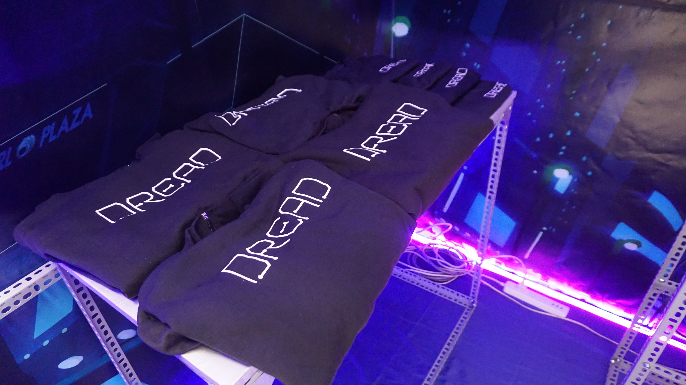
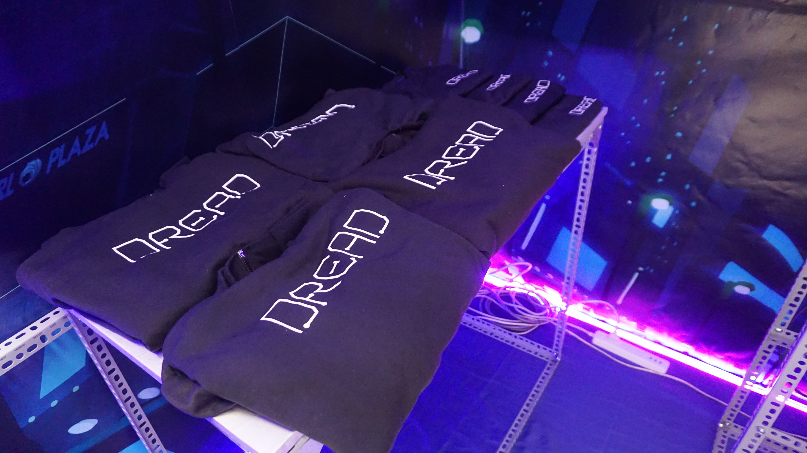

第一位
大学ゼミ卒業
タイトル： DREAD
制作年月： 2018年9月～12月
After Effect / Premiere / Photoshop / Illustrator
javascript / css / html
https://thienvu1697.github.io/dread/
FPT大学卒業プロジェクトであり、
二人のチームで制作した作品です。
ベトナム人の若者の情報を吟味する力のなさに気づき、
ベトナム人の若者をターゲットに、
裏社会における活動などを内容として
ウェブ上で読める漫画を作りました。
ウェブプログラミング言語と技術を用いて、チームメイトの描いたイラストを編集し、ウェブアニメーションを作り、漫画のような流れを創造するというアプローチでウェブサイトを完成させました。
その他に、プロモーションに使う 文房具、ポスター、PVも制作しました。
 
